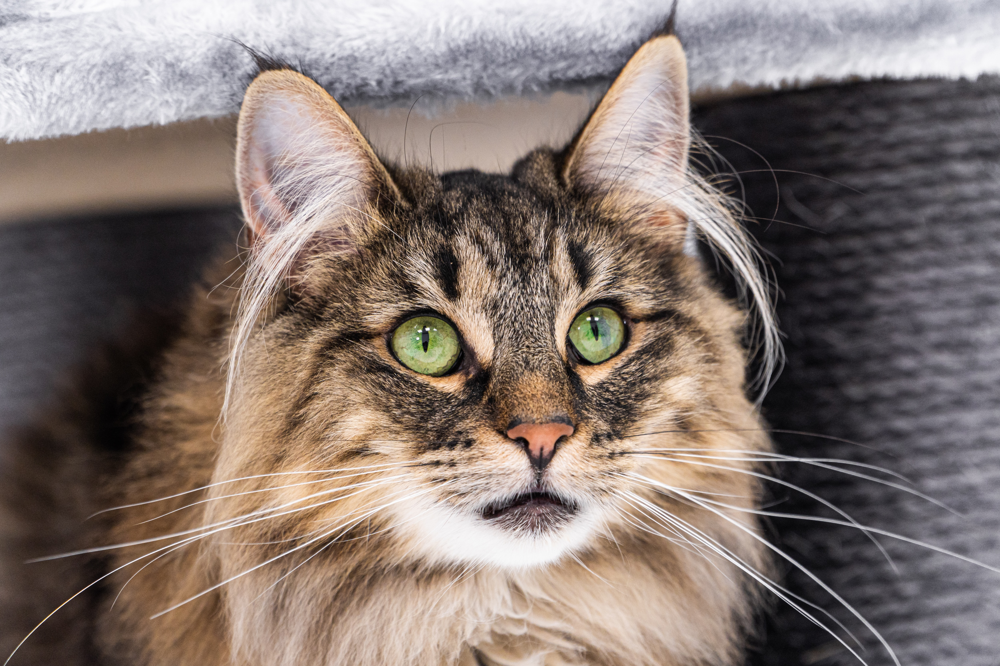

노르웨이 숲은 고양이의 한 품종으로 애묘인들 사이에서는 "놀숲" 이라 줄여서 부르기도 한다. 이름 그대로 노르웨이의 수목 지대에서 자연발생한 종이며, 1970년대 말 순종 고양이로 인정 받았다.
장모종으로 털이 풍성하다. 숫사자처럼 목과 가슴에 털이 길게 난다. 꼬리에도 털이 풍성하기 때문에 일반적인 고양이 꼬리 모양이 아니라 마치 너구리같이 생겼다. 또한 다른 장모종 고양이들에 비하면 그나마 상대적으로 털이 적게 빠지는 편이다. 몸은 롱 앤 서브스탠셜(Long & Substantial) 타입이다. 이마부터 코 끝의 선이 일자이며, 귀 끝과 턱을 이은 선이 정삼각형이다. 아몬드형 눈을 가지고 있고, 꼬리와 몸은 1:1 비율이다. 몸이 길지만 다리는 짧지 않고 균형을 이루며, 체격이 좋고 뼈대가 굵다.
